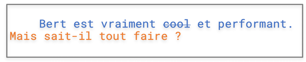
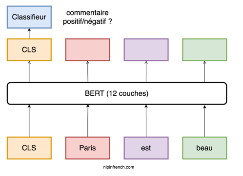

10 questions sur Bert 🇫🇷¶
Qu’est-ce Bert ?¶
La composante principale de Bert est un réseau de neurones de 12 couches qui traite du texte. La couche finale de Bert peut être adapté à ta guise pourvu qu’elle soit pertinente à tes tâches (reconnaissance des entités nommées, analyse sentimentale…).
Qu’est-ce RoBERTa, XLNet, et ALBERT ?¶
Des modèles dérivés de Bert qui sont parvenus à de meilleures performances sur des benchmarks que Bert.
Ai-je besoin de comprendre la récurrence (des modèles CNN ou RNN) pour saisir les subtilités de Bert ?¶
Non, Bert est basé sur l’architecture transformer. En plus il n’y a que la partie encoder qui est concernée.
C’est quoi alors la différence entre RNN et Transformer ?¶
Les réseaux de neurones récurrents ne “regardent” qu’un seul mot à la fois et utilisent des hidden states pour stocker, filtrer et intégrer les informations du passé. Cela rend le modèle très compliqué rien qu’au niveau de la backpropagation (rétropropagation du gradient).
Attention, les RNNs constituent un champ de recherches à part entière. Cela mérite une autre série de tutoriels.
Lien entre Pre-training, Fine-Tuning et apprentissage de transfert ?¶
Bert est pré-entraîné sur un énorme corpus avec deux tâches. Vu la spécificité de ces deux tâches il est supposé (attention c’est juste une hypothèse) que le modèle acquerra une compréhension profondément contextualisée des mots (concrètement ce sont des embeddings). Mais ce modèle out-of-box n’est pas apte à des tâches en aval (downstream tasks) qui demandent un réapprentissage sur des corpus spécifiques (fine-tuning). L’étude de ceux deux processus relève de l’apprentissage de transfert.
Quels intérêts ?¶
Entraîner un modèle pour une tâche spécifique demande souvent un énorme corpus d’un domaine particulier qui n’est pas forcément disponible. En plus c’est très couteux en termes de temps et de calcul. Le processus de fine-tuning, en plus d’économiser du temps, arrive à de meilleures performances qu’un modèle entraîné à partir de zéro et fait maison.
Attention ! Cela ne signifie pas que le fine-tuning prend quelques secondes, il est juste rapide par rapport au pré-entrainement de Bert et aux modèles faits maison. Si l’on remonte un peu dans le temps, les bénéfices de cette approche ont été d’abord constatés en reconnaissance d’images (branche de computer vision la traduction en français, vision par ordinateur, est maladroite à mon avis). Théoriquement cela a peu de choses de nouveau.
Sur quelles tâches est entraîné Bert ?¶

Tout comme pour word embedding de Mikolov, ce sont des fake tasks ou tâches de pré-entraînement. La première (Masked Language Model) consiste à deviner un mot masqué dans une phrase (comme le mot cool) et la deuxième (Next Sentence Prediction) à déterminer si la deuxième d’une paire de phrases (comme la phrase en orange) constitue la suite de la première.
Quels avantages des embeddings Bert ?¶
Comme le mot est masqué à l’intérieur de la phrase, Bert est censé acquérir une représentation contextualisée utilisant aussi bien le contexte de gauche et celui de droite. C’est aussi le cas de BiLSTM mais le contexte exploité par ce dernier est plus restreint. Aussi il est à noter que Bert a un vocabulaire fixe constitué de “wordpiece” (tokens, sous-tokens, caractères), ce qui permet de traiter des problèmes d’out of vocabulary (OOV) de manière plus efficace.
Pourquoi WordPiece ?¶
Prenons anticonstitutionnellement. Si l’on entraîne un vecteur pour ce mot il y a peu de chances qu’on en trouve beaucoup d’occurrences. Ce mot sera par la suite sous-représenté. En revanche si l’on le décompose en “anti”, “constitution” et “ment”. Ces trois subtokens seraient plus fréquents (donc plus de samples) dans un grand corpus et la recomposition de ces 3 subtokens constitueraient une meilleure représentation.
Comment le fine-tuning marche concrètement ?¶
Cette question est liée à la question. Le processus de fine-tuning dépend de la dernière couche que vous rajoutez à Bert. Prenons l’analyse sentimentale comme un exemple. La figure créée par nos soins illustre ce principe fort simple. A la suite de 12 couches Bert on rajoute un classifieur qui, en fonction du embedding du token CLS (qui englobe l’info de toute la phrase), prédit s’il s’agit d’un commentaire positif ou négatif.

Next ?
Des tutoriels sur
NER (reconnaissances des entités nommées)
classification de textes
fine-tuning sur corpus spécifique
Stay tuned!